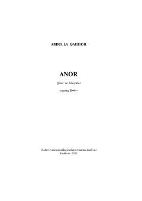

AAbdulla Qahhorning hayotiy voqealarga boy sara qissa va hikoyalar to'plami.
Ushbu kitob taniqli o'zbek yozuvchisi Abdulla Qahhorning sara qissa va hikoyalarini o'z ichiga oladi. Asarlarda insoniy munosabatlar, hayotiy qiyinchiliklar va jamiyatdagi turli xarakterdagi kishilarning taqdirlari ta'sirli tarzda tasvirlangan. Muallifning o'tkir tili va hayotiy kuzatishlari kitobxonga chuqur ma'naviy ta'sir ko'rsatadi.